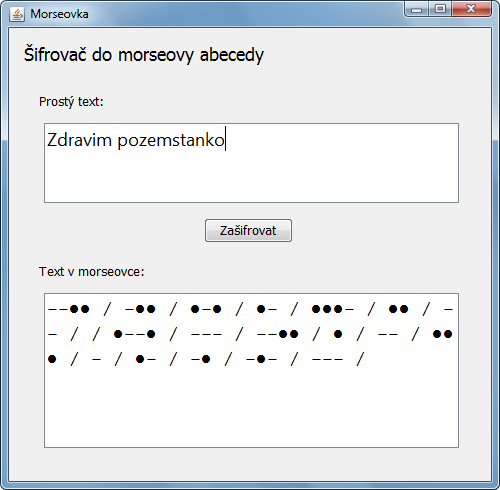

Úkol z lekce 05 - Morseovka
Vytvořte aplikaci, která zadaný text převede na morseovku.
Úkol se dá rozdělit na 2 podúkoly.
- Napsání samotné funkcionality
- Navrhnutí grafického uživatelského rozhraní
Doporučuji postupovat stejným způsobem, jako v příkladu v hodině.
Tedy: Nejprve doporučuji založit prázdný projekt se SpousteciTridou,
do které vepíšete public static void main(String[] args) a odladíte funkčnost
(vstup a výstup pomocí TextConsole).
V programátorské praxi se funkčnosti říká business logic.
(A to i přes to, že lidé z businessu často logiku postrádají :-) )
Až budete mít hotovou business logiku, založte nový projekt podle šablony
User-Defined -> Czechitas Java a navrhněte uživatelské rozhraní.
Může být podobné jako na obrázku, ale nemusí.
Až budete mít prototyp uživatelského rozhraní, tlačítku přidejte obsluhu události
actionPerformed - bude to například metoda private void priStiskuBtnZasifrovat(ActionEvent e).
Všechno vygenerujete pomocí grafického návrháře
JFormDesigner, který jsme používali na hodině a celý minulý semestr.
Tip: Tabulku morseovky najdete například na Wikipedii a dokonce lze najít i online šifrovač a dešifrovač (pro kontrolu).